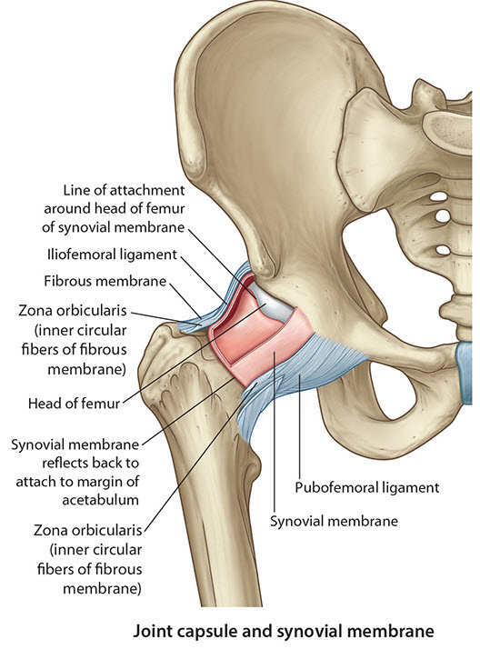
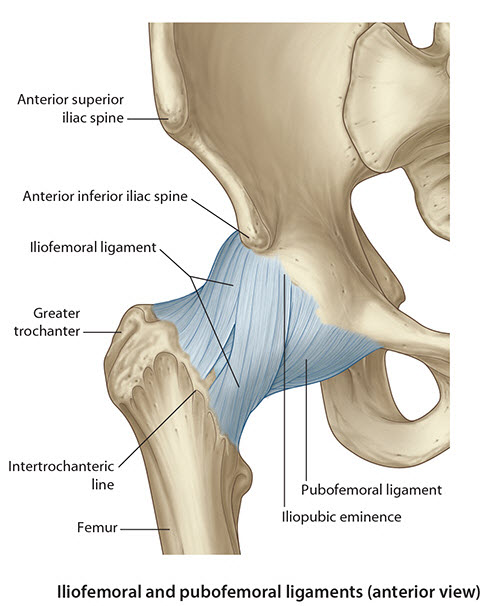
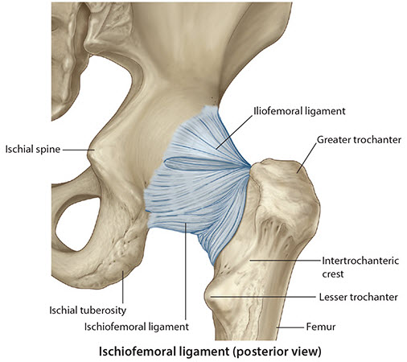

Lab 5 - Module 1 - Hip and Anterior Thigh - Osteology of the Hip and Thigh: Page 6 of 6
×

|  |
| Tap on image to enlarge |
Ligamnetous Stability of the Hip:
| Return to the hip and femurs. |
| Joint Capsule – The capsule is fibrous lined with synovial tissue (as all joint capsules are). It arises from the margins of the acetabulum and extends, sleeve like, downward and laterally around the neck of the femur to attach near the intertrochanteric line anteriorly and approximately a fingerbreadth above the intertrochanteric crest posteriorly. |
| Pubofemoral Ligament - it arises from the anterior inferiorly from the body of the pubis and from the adjacent superior ramus. It runs distally in front of and inferior to the inferior head of the femur and blends with the iliofemoral ligament and attaches on the inferior femoral neck. Prevents excessive abduction of the hip joint. |
| Ligament of the Head - lies within the joint cavity and is surrounded by synovial fluid. It runs from the acetabular surface to the fovea capitis of the head of the femur. It has no role in stability of the hip but provides safe passage for the artery that supplies the head of the femur. |
|  |
| Tap on image to enlarge |
| Iliofemoral Ligament - largest and most important ligament of the hip joint. It is also, arguably, the strongest ligament in the body. It attaches to the anterior inferior iliac spine and the area between the AIIS and iliac spine. It runs inferior and anterior to the hip joint to attach to the femur at the greater trochanter and the intertrochanteric line. The two attachements give the ligament the appearance of an inverted “Y”. It is therefore commonly referred to as the Y-ligament. Function of the ligament is to prevent hyperextension of the hip joint during standing. |
|  |
| Tap on image to enlarge |
| Ischiofemoral Ligament - arises from the body of the ischium, posterior and inferior to the acetabulum. The fibers run posterior and laterally covering the majority of the posterior hip joint. It attaches to the posterior superior part of the junction of the neck and greater trochanter. Weakest of the hip ligaments. |
Based on the location of the fracture, would you classify the fracture as “intracapsular” or “extracapsular”? |
|
|
Intracapsular. Why? |
|